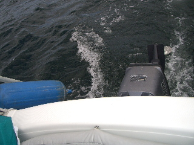
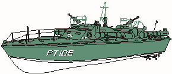

<!DOCTYPE HTML PUBLIC "-//W3C//DTD HTML 4.0 Transitional//EN">
<HTML><HEAD><TITLE>Myth #3 - A FAST SAILBOAT CAN NOT ALSO MOTOR
FAST</TITLE>     
<META http-equiv=Content-Type content="text/html; charset=windows-1252">
<META content="Main Page" name=Title>
<META name="keywords" 
content="Mac26x Anarchy, Sailing Anarchy, Competing Hull Forms, Sailing 
Speed, La Perla 
Noir, Different Sailing Styles">

<!-- Define style sheet for this page -->
<LINK rel="stylesheet" href="lsStyle.css" type="text/css">
<STYLE type="text/css">
<!--
TD      {
  font: 12pt Arial, sans-serif;
  color: #000000;
  text-align: right;
  margin-left : auto;
  border-left-width : thin;
}
.date   {
  font: bold 12pt Arial, sans-serif;
  color: #0C5000;
  text-align: right;
}
.medium {
  font: 10pt Arial, sans-serif;
  color: #000000;
}
-->
</STYLE>

<SCRIPT language=JavaScript>
	<!--
/*
 * Utility function to sniff browser
 * (Adapted from index.js file)
 * jjh 1/17/2002
 */

var ns = 0;
var ie = -1;

function checkBrowser() {
	if (navigator.appName.indexOf("Netscape") != -1) {
		return ns;
	} else {
		return ie;
	}
}

/*
 * JavaScript functions to open help files in separate Navigator windows
 * jjh 1/17/2001
 */

function openMusic() {
	if (checkBrowser() == ns) {
		var nsWin =
window.open("crockett.htm","Music","width=200,height=200,screenX=25,screenY=25,resizable=yes,scrollbars=yes")
	} else {
		var ieWin = window.open("crockett.htm")
	}
}
function openInformation() {
	if (checkBrowser() == ns) {
		var w = window.open("/temptime/BenefitMemoNonPerm.htm","infoWin","width=400,height=400,screenX=40,screenY=40,resizable=yes,scrollbars=yes")
	} else {
		var ieWin = window.open("/temptime/BenefitMemoNonPerm.htm")
	}
}
	// -->
	</SCRIPT>

<SCRIPT language=JavaScript>
	<!--
	function JSDateClock() {
		// Grab today's date and time
		var today = new Date()
		// Assign weekday name from JavaScript weekday integer value


		var vDay = today.getDay()
			if (vDay == 0)
				vWeekday = "Sunday"
			else if (vDay == 1)
				vWeekday = "Monday"
			else if (vDay == 2)
				vWeekday = "Tuesday"
			else if (vDay == 3)
				vWeekday = "Wednesday"
			else if (vDay == 4)
				vWeekday = "Thursday"
			else if (vDay == 5)
				vWeekday = "Friday"
			else if (vDay == 6)
				vWeekday = "Saturday"
		// Assign month name from JavaScript month integer value
		var vMonth = today.getMonth()
			if (vMonth == 0)
				vMonthname = "January"
			else if (vMonth == 1)
				vMonthname = "February"
			else if (vMonth == 2)
				vMonthname = "March"
			else if (vMonth == 3)
				vMonthname = "April"
			else if (vMonth == 4)
  				vMonthname = "May"
			else if (vMonth == 5)
				vMonthname = "June"
			else if (vMonth == 6)
				vMonthname = "July"
			else if (vMonth == 7)
				vMonthname = "August"
			else if (vMonth == 8)
				vMonthname = "September"
			else if (vMonth == 9)
				vMonthname = "October"
			else if (vMonth == 10)
				vMonthname = "November"
			else if (vMonth == 11)
				vMonthname = "December"

		// Parse out other date and time components
		var vDate = today.getDate()
		var vYear = today.getYear() + 1900 // Adjust year for Y2K
		var vHour = today.getHours()
		var vMinute = today.getMinutes()
		var vSecond = today.getSeconds()
		// Set current date and time from parsed variables
		var vCurrentDate = vWeekday+", "+vMonthname+" "+vDate+", "+vYear
		vCurrentDate += " " + ((vHour > 12) ? vHour - 12 : vHour)
		vCurrentDate += ((vMinute < 10) ? ":0" : ":") + vMinute
		vCurrentDate += ((vSecond < 10) ? ":0" : ":") + vSecond
		vCurrentDate += (vHour >= 12) ? " PM" : " AM"
		// Display date and time in "dateField" INPUT object
		document.dateclockForm.dateField.value = vCurrentDate
		// Code automatically updates every 1000 milliseconds (1 second)


		id = setTimeout("JSDateClock()",1000)
	}
	// -->
	</SCRIPT>

<META content="MSHTML 5.50.4134.600" name=GENERATOR></HEAD>
<BODY bgColor=#ffffff background=bgLogo.jpg onload=JSDateClock()><A
name=Top></A><FONT face=Arial>
<H1>Cruising Log of the Murrelet</H1>
<TABLE>
  <TBODY></TBODY></TABLE>
<TABLE cellSpacing=0 cellPadding=0 width="100%" border=0>
  <TBODY>
  <TR>
    <TD align=right>
      <TABLE cellSpacing=0 cellPadding=0 border=0>
        <TBODY>
        <TR>
          <TD width=11 bgColor=#cccc99 height=19></TD>
          <TD vAlign=center align=middle bgColor=#cccc99><A class=OnTab
            target=_top href="murrelet.htm">Main</A></TD>
          <TD width=10 bgColor=#cccc99 height=19></TD>
          <TD width=10 bgColor=#cccc99 height=19></TD>
          <TD vAlign=center align=middle bgColor=#cccc99><A class=OffTab
            target=_top href="p01.htm">CB</A></TD>
          <TD bgColor=#cccc99 height=19></TD>
          <TD width=10 bgColor=#cccc99 height=19></TD>
          <TD vAlign=center align=middle bgColor=#cccc99><A class=OffTab
            target=_top href="p02.htm">FB</A></TD>
          <TD bgColor=#cccc99 height=19></TD>

          <TD width=11 bgColor=#316592 height=19></TD>
          <TD vAlign=center align=middle bgColor=#316592><A class=OffTab
            target=_top
          href="p03.htm">Fast</A></TD>
          <TD bgColor=#316592 height=19></TD>

          <TD width=10 bgColor=#cccc99 height=19></TD>
          <TD vAlign=center align=middle bgColor=#cccc99><A class=OffTab
            target=_top
          href="p04.htm">Size</A></TD>
          <TD bgColor=#cccc99 height=19></TD>


          <TD width=10 bgColor=#cccc99 height=19></TD>
          <TD vAlign=center align=middle bgColor=#cccc99><A class=OffTab
            target=_top
          href="p05.htm">Keel</A></TD>
          <TD bgColor=#cccc99 height=19></TD>

          <TD width=10 bgColor=#cccc99 height=19></TD>
          <TD vAlign=center align=middle bgColor=#cccc99><A class=OffTab
            target=_top
          href="p06.htm">Ballast</A></TD>
          <TD bgColor=#cccc99 height=19></TD>

          <TD width=10 bgColor=#cccc99 height=19></TD>
          <TD vAlign=center align=middle bgColor=#cccc99><A class=OffTab
            target=_top
          href="p07.htm">Point</A></TD>
          <TD bgColor=#cccc99 height=19></TD>


	       <TD width=10 bgColor=#cccc99 height=19></TD>
          <TD vAlign=center align=middle bgColor=#cccc99><A class=OffTab
            target=_top
          href="p08.htm">Tall</A></TD>
          <TD bgColor=#cccc99 height=19></TD>


          <TD width=10 bgColor=#cccc99 height=19></TD>
          <TD vAlign=center align=middle bgColor=#cccc99><A class=OffTab
            target=_top
          href="p09.htm">Race</A></TD>
          <TD bgColor=#cccc99 height=19></TD>

		  <TD width=10 bgColor=#cccc99 height=19></TD>
          <TD vAlign=center align=middle bgColor=#cccc99><A class=OffTab
            target=_top
          href="p10.htm">Lean</A></TD>
          <TD bgColor=#cccc99 height=19></TD>

		  <TD width=10 bgColor=#cccc99 height=19></TD>
          <TD vAlign=center align=middle bgColor=#cccc99><A class=OffTab
            target=_top
          href="p11.htm">Ocean</A></TD>
          <TD bgColor=#cccc99 height=19></TD>

          <TD></TD></TR></TBODY></TABLE></TD></TR></TBODY></TABLE>
<CENTER></CENTER>
<TABLE cellSpacing=0 cellPadding=0 width="100%" bgColor=#316592 border=0>
  <TBODY>
  <TR>
    <TD></TD></TR></TBODY></TABLE>
<TABLE cellSpacing=0 cellPadding=0 bgColor=#316592 border=0>
  <TBODY>
  <TR>
    <TD vAlign=top width="100%">
    <TD></TD></TR></TBODY></TABLE></TD></TR></TABLE><P></P>


<H3>#3 - A FAST SAILBOAT CAN NOT ALSO MOTOR FAST.</H3>
<P>
<TABLE cellPadding="0" cellspacing="0">
  <TBODY>
  <TR vAlign=top>
    <TD align=left>
<P><Center>
[<A
href="murrelet.htm">First Page</A>] [<A
href="p04.htm">Next</A>] [<A
href="p03.htm">Prior</A>] [<A
href="p11.htm">Last</A>]
</center>
<P>
<!--applet starts 
here----------------------------- -->
<APPLET 
name=HotMedia 
code=hm35.class 
width=320 
height=240
bgColor=#316592
hspace="8" vspace="8">
<PARAM NAME="mvrfile" VALUE="roach.mvr">
</APPLET> 
<!--applet ends here------------------------------- -->      
<div align="center">
      <FORM name=dateclockForm center><INPUT
      style="FONT-SIZE: 10pt; FONT-FAMILY: Arial; align: Center" size=25
      name=dateField> </FORM>           
</div> 
<p id=PubSt2P><span id=PubSt2F></span></p>
    </TD>
    <TD>
      <P><p id=PubSt2P><span id=PubSt2F>

<a href="http://www.sailinganarchy.com"></a>
This myth has been blown away with the introduction of the Mac26x in 1996. 
But it is a prevailing notion among the uninitiated and is a popular 
notion in well respected British publications like Practical Boat Owner. 
This myth has been propagated by the scaling down of large displacement 
hull vessels for recreational use. When a displacement hull is reduced to 
less than 40 feet at the waterline, the result while motoring is less than 
satisfactory, both in speed and stability, unless other design changes are 
made to compensate. Outside the restriction of displacement hull design, 
however, there is no physical law preventing "hybrids" that sail and motor 
well. By my way of thinking, pure power boats, like pure sail boats are 
"half breeds", capable of doing only half of the work desirable for 
recreational boating. 


 <br clear=all>
</span></p>
<CENTER>
<TABLE BORDER="0" WIDTH="80%" CELLPADDING="5">
<TR>
<TD>
<form method="get" name="frmCore" 
action="http://clickit.go2net.com/search">
<input type="hidden" name="cid" value="317668">
<input type="hidden" name="site" value="srch">
<input type="hidden" name="area" value="is.clicktracking">
<input type="hidden" name="shape" value="textlink">
<input type="hidden" name="cp" value="info.dogpl">
<input type="hidden" name="eto" 
value="http://www.dogpile.com/info.dogpl/search/redir.htm">
<input type="hidden" name="advanced" value="1">
<input type="hidden" name="top" value="1">
<input type="hidden" name="qso" value="location">
<input type="hidden" name="domaini" value="">
<input type="hidden" name="domaint" value="eskimo.com">
<input type="hidden" name="familyfilter" value="0">
<input type="hidden" name="q_phrase" value="mighetto">
<input type="hidden" name="dpcollation" value="0">
</span>
<input type="hidden"  name="qcat" value="web"></input>&nbsp;
&nbsp; 
<input type="text" size="40" name="q_all" value="">
 &nbsp; <input type="submit" value="Go Fetch!" class="formSubmit">
</form>
</TD></TR></TABLE>
      
      
      </P>
      <CENTER>
      <DIV align=center>
      <DIV align=center>
      </DIV></DIV></CENTER></TD></TR></TBODY></TABLE>
<HR>
<P><blockquote><i>Boats can be split into two categories: the ones that 
dig holes in the water and the ones that travel on top. Race boats, 
runabouts, fast cruisers, sport fisherman and military patrol craft are 
part of the planing fraternaty. A few racing sailboats and wind surfers 
fall into the same cult...</i><br>

<p>Ralph Naranjo<br>
Ocean Navigator<br>
pg 22 November/December 2006</p></blockquote><HR>

<h2><a name="Sailing Anarchy">Sailing Anarchy</a></h2> 
[<a href="#Top">Top</a>] 
[<a href="#Competing Hull Forms">Next</a>] 
[<a href="#Top">Prev</a>] 
[<a href="#Bot">Bot</a>]</p> 
To understand how a fast sailboat can also safely motor fast it is useful 
to 
consider the CLAMS (Classic Ancient Mariners). These men and women row on 
Green Lake, which I can see from my Seattle home and on the Montlake cut 
as far as the Ballard Locks from Lake Washington. Carbon-fiber shells are 
used these days. 
<P>
Rowing looks gentle, like sailing, but there 
is a certain violence and a 
definite acceleration involved at the start of a race. The shells are 
tippy vessels with the lowest of freeboard and yet on any morning that a 
pleasure boat might make way through the cut, they will. 
Stability is gained by balance. The balance of the extended oars and 
attention to the details of catching, driving, feathering and recovery. 
These vessels rocket. A sailboat built for high performance sailing is 
similar. 
The form presented to 
the water when under sail will be thin and shell-like or as is sometimes  
stated racing-canoe like. That is a simlar 
shape presented by the 
Mac26x when heeled at ~17 degrees. <br clear=all>
<P>
The Mac26x doesn't have oars for balance, instead she has water ballast 
tanks as far from the centerline as possible, which provides stability 
like extended oars would and maximum hull speed is reached with wind that 
is normal when heeled between 15 and 20 degrees. <I>A sailboat that 
is sailed at an angle of heel greater than 25 degrees has to much 
sail up or needs more ballast.
</i>There is a physical law
that limits maximum speed in displacement hull vessels. The law dictates that
the smaller the length of the vessel at the water line, the slower the maximum
possible speed. It has to do with the inability of a displacement hull vessel to
climb its own bow wake. The Mac26x hull design is displacement like in the bow
but is a planing hull further aft. Hence by moving crew aft and reducing 
heel to 10 to 15 degrees it is possible to break out of displacement mode 
and reach planing speeds.
<P>  

This allows Murrelet to power or sail over
her own bow wake thereby both motoring and sailing at fast speeds. To reach
planing speeds under sail live ballast (passengers) are moved aft so that 
the planing part
of the hull can do its work in climbing the bow wave and then forward to pop the
boat over the top. Mac26x cruisers plane when they have exceeded their
displacement hull speed which is calculated fairly accurately IMO through the
following applet:
<center>
<APPLET code=ch11.HulSpeed.class width=350 height=300>
</APPLET>
</center>
<P>The Mac26x, unlike the Mac26m, also has a "powerboat underbelly" 
which  
comes into play while turning at Wide Open Throttle (WOT). As the cruiser 
turns, to retrieve a water skier for example, the belly provides bouyancy  
preventing the boat from flipping. Most Mac26x captains, especially 
those who have mounted 70 hp motors, will reduce speed
before turning just as the CLAMS and smart ski boat operators will. 
Editors of the February 15 through March 15 2006 Nor'westing conclude 
"The MacGregor 26 remains a popular and appropriate choice for 
boaters anxious to enjoy a single vessel that can be a <i>very good 
sailboat as well as a very good powerboat.</i> Enthusiastic MacGregor 
owners probably wonder why other boaters would ever settle for a boat 
that is only a powerboat or only a sailboat."<p><A href="FLM202.JPG"></A>

<h2><a name="Competing Hull Forms">Competing Hull Forms</a></h2>
[<a href="#Top">Top</a>] 
[<a href="#Sailing Speed">Next</a>] 
[<a href="#Sailing Anarchy">Prev</a>] 
[<a href="#Bot">Bot</a>]</p> 
The competing hull forms in 
a Mac26x (displacement in the
bow and planing aft) bring up some interesting aspects in sailing the cruiser.
For example, one contemplated factory modification in 2000, involved adding a
platform to the transom which would make the Mac26x 28 feet overall and perhaps
25 feet at the water line when at a modest heel. (I estimate that Mac26x
cruisers are 22 feet at the water line when crew members are sitting aft owing
to bow lift.) The above applet demonstrates that a swim platform would yield a
higher theoretical displacement hull speed owing to the extra feet at the
waterline. But it would also prevent the craft from cresting her bow wave at the
lower speeds associated with the standard shorter LWL. The work around involved
a platform that could be raised. Hence, when the cruiser was lightly loaded, the
platform would not be involved. But when heavily loaded for extended cruising
the deployed platform would provide more storage room and give the added benefit
of a higher displacement hull speed. (Length at Waterline is also called Load at
Waterline.) A dinghy might also be mounted on the platform. The factory decided
against offering the modification owing to concerns regarding container shipping
the vessel. Apparently the platform mechanism would prevent two modified Mac26x
cruisers from fitting into one US size train container, hence doubling the
shipping costs to dealers. A pallet-wide ocean cargo container will also 
hold 
the cruiser on its trailer. A special roller may be required to tilt the
vessel slightly.  
This versatility 
allows protecting the yacht investment while moving the cruiser to blue 
water destinations.  In anycase the MacGregor 26M, introduced in March of 
2003, 
addressed the issue of heavy 
loading with larger storage compartments.</p>

<h2><a name="Sailing Speed">Sailing Speed</a></h2>
[<a href="#Top">Top</a>]
[<a href="#pearl">Next</a>]
[<a href="#Competing Hull Forms">Prev</a>]
[<a href="#Bot">Bot</a>]</p>

<P>
<a href="http://www.eskimo.com/~mighetto/p11.htm"> 
http://www.eskimo.com/~mighetto/p11.htm</a> is one of many calculators 
available
on the web that are used as the basis of marketing claims regarding 
sailboats.
This one defaults to values for the X. If you plug in values for the M
you can state that by the math the M has a slightly higher potential for
speed </i>under sail when not planing</i>. Her Sail Area to Displacement 
ratio is 19.067 and the X 
SA/D is
18.677. Most of that potential is owing to sail area, however, and in 
practice
crew competency and sea conditions will determine which vessel wins any
race. The hull speed for the M of 6.437 is not enough of a difference from
the X which is 6.426 for it to be otherwise. Couple that with the finding
that the X actually sails faster when reefed in many conditions, and one
can conclude that both vessels are dissimilar in regards to powering
by sail.
<p>
<center><table BORDER=0 CELLSPACING=3 CELLPADDING=3 WIDTH="82%" >
<tr>
<td><center></center></td><td><center></td></center>
</tr>
</table></center>
<p>The math shows that both vessels are capable of breaking 
from displacement 
speed
and reaching a true plane. This is indicated by the displacement/length
ratio being under 150. The X is significantly better at planing; her D/L 
is 137.59 vs the M's at 145.61. It probably will take abnormally strong 
wind (20 knots
perhaps) for the M to plane fully ballasted where that potential in the X 
is evident in
12 knot winds, perhaps less depending on the point of sail. The X has a
planing Dribbly style hull form. The M has more of a traditional rounded
River sailboat form. The marketing material cover picture for the X 
(left side) shows 
her on plane;
no wave form is visible on her length. The M, (right side) while cooking 
in 
good wind,
is at displacement speeds as indicated by the wave form on her length. She 
is also being sailed at a noticable heel, more like a traditional 
displacement sailboat. These two pictures portray a vast difference 
between the sailing styles advanced in the two at-first-glance similar 
powersailers. 

<H2><a name="pearl">Rendezvous 2005:  Huzzah, La Perla Noir!</a></H2>
[<a href="#Top">Top</a>]
[<a href="#Motoring Speed">Next</a>]
[<a href="#Sailing Speed">Prev</a>]
[<a href="#Bot">Bot</a>]</p>
<p><i>On Thursday June 16th 
three Mac26x cruisers (the triple X fleet)  
joined the 2005 MacGregor 
Rendezvous. We were unable to catch the Elliot Bay MacGregor fleet but 
were able to 
Meet the Pearl with them during the dog watch at Port Orchard.</i></p> 
 

<p>
<i>The Rendezvous Not Quite 
Race was held on Saturday June 19th. 
Two of 
the 
triple X boats were honored with wine glasses for their fast times around 
the marks but neither would challenge the Pearl when she hoisted sail to 
join the fun. Instead the cameras started clicking. Huzzah, La Perla Noir! 
For God, Country and the prize  Juvinal Navitee. Her skipper Tripp Gal is 
the one with the morbid fascination.</i> 

 

<p><i>There were almost as many positive flotation power sailers at the 
rendezvous and race as there were at the J24 Nationals, where several 
capsized in 20 knot winds and one sank. No compromise on safety with a 
MacGregor yacht.</i></p>  

 

<p><i>BZBWY:  US Navy Code for Well done Blue Water Yachts.</i></p><br 
clear="all">

 
<blockquote>"Treading the line between power and sail, the 
Macgregor is the
definition
of <i>NO</i> compromise  and unlikely to appeal to purists on either side. 
But if
trailerability, exceptionally roomy accommodations and powerboat 
speeds
are high on your list of wants  you ought to take a look at the 
MaCregor
26M."<br>
<p>Small Craft Advisor<br>
<a href="http://www.amazon.com/exec/obidos/ASIN/1574090070">
Page 59</a></p></blockquote> 

 
<p><i> The word NO has been added to the 
above quote. But does it really 
change 
the meaning? For years boaters have been trained to accept the notion that 
you must compromise power for sail and visa versa. When Jack London set 
out for the South Seas he built a  sailing vessel with a 70 hp gasoline 
engine. He ensured that his 43 foot sloop had enough engine power to take 
on any river rapid or storm surge. That was 80 years ago. Today it is very 
rare for a manufacturer to recommend a replacement engine for cruising 
sailboat that is as inadequate as the 30 hp Diesel engines common in the 
past. That would compromise on safety.  SCA on page 52 (as in TP52 
supporters caused 26x production to halt temporarily) that owners are 
installing larger than 70 hp motors. The following was reported to me 
prior to the rendezvous.</i></p>

<h2><a name="Motoring Speed">Motoring Speed</h2>
[<a href="#Top">Top</a>]
[<a href="#Different Sailing Styles">Next</a>]
[<a href="#pearl">Prev</a>]
[<a href="#Bot">Bot</a>]</p>
<p><i>In October of 2005 I found myself unwilling to spend any additional 
money on a 6 year old motor and opened up my wallet for a replacement. 
BoatWorks magazine www.boatworksmagazine.com came out with its review of 
the Mac26x and strongly recommended 4 stroke engines for them. I had been 
following the new 2 stroke machines and it took an intervention by my 
dealer and crew members to get me to mount the Susuki 50 four stroke on 
Murrelet.</i></p> 

<p><i>Yacht Designers will teach students to size a sailboat motor by a 
heuristic (rule of thumb). It is this training that prevents boat buyers, 
owners and novice yacht designers from realy considering large engines on 
sailboats. And there is the myth that inboard  power plants are 
preferable, this myth coming perhaps from the notion that an outboard is 
more susceptible to being swamped out of action by a heavy sea.</i></p> 

<p><i>Todays outboards are at least as reliable if not more reliable than 
an inboard in heavy seas and the advantages involving internal space, 
maintenance and replacement of an outboard over an inboard are undeniable. 
There is also the advantage of not compromising the hull design to 
accommodate the shaft and propeller of an inboard.</i></p> 

<p><i>Inboard motors typically can not be tilted more than 10 degrees, 
this owing to the oil pan. Hence the aft portion of the hull of a sailboat 
is usually lifted to accommodate the propeller shaft and propeller, this 
harming greatly planing and surfing potential.</i></p> 

<p><i>There are two motor heuristics currently holding back the future of 
sailboat design. The first sizes the auxiliary by sail area and the second 
by boat weight. Both ignore planing potential, which became possible with 
modern materials such as fiberglass. FYI these rules are, 1 hp per square 
foot of sail and 3 to 5 hp per ton respectively. Both rules of thumb make 
the mater of auxiliary power in a sailing yacht more complicated that it 
really is.</i></p>  

<p><i>There is very little difference in cost between a 70 hp or 90 hp 
motor and a 50 hp motor. There is also little difference in weight and 
when the boat is designed to be buoyant where the motor is to be placed, 
as the X is, why not? The operator can always run at low RPM, this being 
good for the life of the motor and making the motor run quietly and there 
is comfort in knowing that should 
the reserve power be necessary, say during the perfect storm, that it is 
available. A larger auxiliary motor also means more sail can be carried 
because the motor can be used to override overloaded sails.</i></p>

 

<blockquote><blockquote>
<p id=PubSt2P><span id=PubSt2F>Date: Wed, 25 May 2005 17:54:54 -0600<br>
From: Bill Barnett <Bill.Barnett@perbio.com><br>
To: mighetto@eskimo.com, dbarnett@Champ.usu.edu<br>
Cc: BarnettG@central.edu<br>
Subject: rpm and mph for 26 M with 90 hp E-Tec at higher elevations<br>
<p id=PubSt2P><span id=PubSt2F> </span></p>

<p id=PubSt2P><span id=PubSt2F>Frank,

<p id=PubSt2P><span id=PubSt2F>My boat is a 2005 MacGregor 26M. We live in 
Utah and at this time 
trailer
to lakes in the rocky mountain area. Most of our destination lakes 
vary in
elevation from 4500 ft to 7,000 ft.  The power output of outboards at 
these
elevations is considerably different than at sea level. So, while some 
may
debate my choice in size of motor, I will just provide some data from 
the
tests I have conducted in my search for appropriate prop size. I had a 
2005
90 hp Evinrude E-Tec Saltwater Edition installed by our local factory
authorized Evinrude dealer. The motor is clean, quiet, high tech, no 
mixing
of oil and no problems meeting any state's emission standards. While 
it has
power trim tilt and electric start, it can also be rope started. 
Weight is
318 pounds. The owners manual suggests selecting a prop that allows 
engine
to attain 4500 to 5500 rpm at wide open throttle (WOT). My dealer 
would
like to see over 5000 rpm and preferably towards the 5500. The redline 
is
not indicated on the gauges or in the minimal owners manual, but I 
believe
my dealer said 6000 to 6200 rpm. The props I have tried have all been 
13.75
inch diameter and I believe the first prop I tried was a 15 inch 
pitch. I
did not have my GPS at the time for measuring speed, but the prop was
inappropriate as it would only turn a bit over 4000 rpm WOT (tested at 
4700
ft elevation). I will provide no further data on that prop, which I
returned. I then evaluated two props at 4680 ft and 5932 ft 
elevations. In
both instances the boat has typical gear in it, carrying 12 to 16 
gallons
fuel and myself.  I collected data with ballast full and empty. The 
props
were a standard format prop 13.75 x 13 (diameter x pitch) and a high 
thrust
(HT) 11 inch pitch prop that my dealer liked for pontoon boat 
applications.
I did not care for the 11 inch high thrust prop. The speeds were down 
from
the 13 inch prop and there was some cavitation with it, while there 
was no
cavitation with the standard prop.

<p id=PubSt2P><span id=PubSt2F>At 5932 ft with the 13 inch prop WOT rpm 
was 4800 rpm and speed was 23 
mph
with ballast tanks empty. At 4680 ft the WOT data were 5000 rpm and 25 
mph,
while with tanks full wot was 4650 and top speed was 21 mph at 4680 ft
elevation. With the 11 inch diameter pontoon boat style prop the rpm 
were a
bit higher and the speeds quite a bit lower. The 4680 ft elevation
performance data are shown below.

<p id=PubSt2P><span id=PubSt2F>I have yet to evaluate a prop that allows 
the motor to operate through 
the
optimum rpm range, but I liked the performance with the standard
configuration 13.75 x 13 prop and I will keep it since it will 
probably
also do well if we drop down a bit in elevation. At the elevation I 
use the
boat, the 90 hp motor seems a suitable match. I liked cruising at 4000 
rpm
and nearly 19 mph while the engine was not straining at all. Feel free 
to
share this information. I would enjoy participating in the big BWY 
regatta
you described.
<p id=PubSt2P><span id=PubSt2F>
...Bill
<p id=PubSt2P><span id=PubSt2F><blockquote>
<p id=PubSt2P><span id=PubSt2F>


<TABLE border="0" cellpadding="0" cellspacing="8">
	<TBODY>
		<TR>
			<TD colspan="5" height="74">Table 1. MacGregor 26M
			with 90 hp Evinrude E-Tec.<BR>
			</SPAN>Data collected at 4680 ft elevation, air 
temp 65 F. <BR>
			Ballast empty or full.<BR>
			</TD>
		</TR>
		<TR Align=Right>
			<TD height="22">RPM</TD>
			<TD height="22">13.75x</TD>
			<TD height="22" width="65">13.75x</TD>
			<TD height="22" width="65">3 7/8 x 11 </TD>
			<TD height="22" width="61">3 7/8 x 11</TD>
		</TR>
		<TR Align=Right>
			<TD></TD>
			<TD>13 empty </TD>
			<TD width="65">13 full</TD>
			<TD width="65">HT empty</TD>
			<TD width="61">HT full</TD>
		</TR>
		<TR Align=Right>
			<TD>1000</TD>
			<TD>4.4</TD>
			<TD width="65">4.3</TD>
			<TD width="65"></TD>
			<TD width="61">3.4</TD>
		</TR>
		<TR Align=Right>
			<TD>1500</TD>
			<TD>6.5</TD>
			<TD width="65">6.2</TD>
			<TD width="65"></TD>
			<TD width="61">5.4</TD>
		</TR>
		<TR Align=Right>
			<TD>2000</TD>
			<TD>8.0</TD>
			<TD width="65">7.8</TD>
			<TD width="65">6.8</TD>
			<TD width="61">6.7</TD>
		</TR>
		<TR Align=Right>
			<TD>2500</TD>
			<TD>9.3</TD>
			<TD width="65">9.0</TD>
			<TD width="65">7.7</TD>
			<TD width="61">7.6</TD>
		</TR>
		<TR Align=Right>
			<TD>3000</TD>
			<TD>12.4</TD>
			<TD width="65">10.8</TD>
			<TD width="65">8.8</TD>
			<TD width="61">8.5</TD>
		</TR>
		<TR Align=Right>
			<TD>3500</TD>
			<TD>15.5</TD>
			<TD width="65">14.5</TD>
			<TD width="65">11.4</TD>
			<TD width="61">9.8</TD>
		</TR>
		<TR Align=Right>
			<TD>4000</TD>
			<TD>18.7</TD>
			<TD width="65">17.0</TD>
			<TD width="65">13.5</TD>
			<TD width="61">12.5</TD>
		</TR>
		<TR Align=Right>
			<TD>4500</TD>
			<TD>22.3</TD>
			<TD width="65"></TD>
			<TD width="65">16.5</TD>
			<TD width="61">15.5</TD>
		</TR>
		<TR align="Right">
			<TD>4650</TD>
			<TD></TD>
			<TD width="65">21.00</TD>
			<TD width="65"></TD>
			<TD width="61"></TD>
		</TR>
		<TR align="Right">
			<TD>4800</TD>
			<TD>23.0</TD>
			<TD width="65"></TD>
			<TD width="65"></TD>
			<TD width="61"></TD>
		</TR>
		<TR Align=Right>
			<TD>5000</TD>
			<TD>25.0</TD>
			<TD width="65"></TD>
			<TD width="65">18.5</TD>
			<TD width="61">18.2</TD>
		</TR>
		<TR Align=Right>
			<TD>5150</TD>
			<TD></TD>
			<TD width="65"></TD>
			<TD width="65"></TD>
			<TD width="61">18.6</TD>
		</TR>
		<TR Align=Right>
			<TD>5250</TD>
			<TD></TD>
			<TD width="65"></TD>
			<TD width="65"></TD>
			<TD width="61">20.0</TD>
		</TR>
		<TR Align=Right>
			<TD></TD>
			<TD></TD>
			<TD width="65"></TD>
			<TD width="65"></TD>
			<TD width="61"></TD>
		</TR>
		<TR>
			<TD></TD>
			<TD></TD>
			<TD width="65"></TD>
			<TD width="65"></TD>
			<TD width="61"></TD>
		</TR>
	</TBODY>
</TABLE>

</blockquote>
</p>
</blockquote></blockquote>

<p>BWY sells a Tohatsu 70 hp that is the same weight as the Tohatsu 90 hp. 
The <a href="#pearl">Pearl</a> sports the 70 hp motor. BWY boats 
are oriented to sea level operation and it is believed 
the 90 hp overpowering. However, Bill's data indicates that the 90 hp may 
be desirable at higher altitudes. <i>Because insurance companies have no 
objections to owners placing 100 HP motors on Mac26x and m cruisers, there 
has always been preasure on the manufacturer to support them. In the X 
brouchure is the statement.

<blockquote>We limited the engine size to 50 hp for a number of reasons: 
An electric start 50 hp motor provides lots of speed, yet it is light  
enough so that sailing performance is not compromised. It is about the 
largest engine that can be started by hand, a nice feature if your battery 
goes dead. It is also about the largest engine you can pick up and move 
around. Try getting a 100 hp engine off the boat and to a repair shop. 
Also, the heavier, higher horsepower engines really eat up 
gas.</blockquote>

Reference to a 100 hp engine is deleted in the Mac26m brouchure.  
Because such an engine is mentioned it 
appears that an engine of up to 100 hp can be handled on the Mac26x if 
such an engine were light enough and could be started by hand. Bill 
Barnet's information is interesting data indead, because his M's 
engine is similar. I understand that once I learn to trailer 
Murrelet, my wife will never desire a larger boat. High Altitude 
lakes represent virtually undiscovored territory for the cruising sailor. 
These cruising grounds will never be 
visited by the larger water bound vessels. Huzzah Bill Barnet for 
his studies on altitude and engine size.</i></p>

   


<h2><a name="Different Sailing Styles">Different Sailing Styles</a></h2>
<p>[<a href="#Top">Top</a>]
[<a href="#Bot">Next</a>]
[<a href="#Motoring Speed">Prev</a>]
[<a href="#Bot">Bot</a>]</p>
<p>The X is meant to be 
sailed 
flat, with stability and ballance coming from the flexible (also called 
soft) rigging as well as centerboard positioning. 
She gets most of her power from the head sail.  
The M uses a roached and powerful main and has a harder rig. The headsail 
is 
far from a source of power. The M mast rotatates to take advantage of the 
power in the mainsail while pointing. The X's centerboard jibes to 
windward to provide better pointing.  The M 
uses a wide daggerboard foil rather than a high aspect ratio swinging 
centerboard foil. These are very different pocket cruisers requiring very 
different sailing styles for reaching speed potential. 
<P>The very different sailing styles are reflected below decks <i>on the 
early models</i>. The M
table is smaller and hinged so that it can be dropped and kept level.
Seats are backed to the hull sides rather than forward and aft as they
are on the X. This is because while sailing the greater heel of the M
boat makes the use of an unhinged table impossible and sitting facing
forward uncomfortable.<BR>
<BR>
Compare this with the more multi-hull or powerboat below deck
accomodations on the X. The dinette table and forward seat are ment to
be used as navigation stations. At slow speeds, in foul weather and on
cold nights, I have crew pilot Murrelet from the navigation station
using GPS and radar and the autopilot remote, all which are positioned
so the table can function in that manner. The M galley and head block
the view, so this mode of operation is less acceptable in checking out 
obstructions identified by radar and gps and totally
unacceptable for single handed sailing. Besides the table isn't large
enough to hold a chart properly. The official web comparison for the 26x
to 26m doesn't refer to the navigation station needs of cruising.
Instead is the statement:<BR>
<BR>
<BLOCKQUOTE>&quot;A centerboard trunk presents a 16&quot; high problem 
from the mast
almost back to the steps. Unfortunately, this ridge dominates the
interior plan, and made it essential to bring the seating structure on
one side out beyond the centerline. This forces a dinette type of
configuration, which makes it more difficult to have a good
conversational type seating for a bunch of crew members. It also reduced
the interior floor space (and thus moving around space) by a significant
margin. The daggerboard trunk, which is partially hidden by the galley,
eliminated these problems.&quot;</BLOCKQUOTE>
<BR>
While the point about good conversational type seating is a good one
the rest of the statement is misleading. In the first place, most
visiters think Murrelet is a fixed keeled vessel; thay are totally unaware 
of
any forced configuration. And in the second, the old saying that the
difference between a power boater and a sail boater is that the sail
boater is the wet, cold, and miserable boater doesn't apply to the X
because of the below deck accomodations which are directly related to
the sail-her-flat sailing style advanced in her design. Fatigue kills
during ocean passages and having a piloting/ navigation station below
decks where charts can be placed is desirable in preventing fatigue.</P>


<p>Nonetheless, by the math, both 
vessels are ocean passage sailboats. There is no significant difference
in the capsize risk ratio (X = 1.94 vs M = 1.91). Both are solidly under 2 
which
is the cut off point defining an ocean worthy cruiser and the ratios only
improve when the boat is loaded for passage making. The M does not have
as good a ballast/displacement ratio (M= .3615; X = .3722) meaning that
the X is slightly more stable than the M when unloaded. I was informed by 
a factory representative that a swim platform for the M is being planned 
and that when this is engineered there is a strong likelihood that it will 
work for the X as well. 

<P>The X hull form 
appears to be similar to the Tasars which are the advanced form of the 
Dribbly hull. If the X hull is also the Tasar/Dribbly hull then there are 
characteristics
known to apply. These include sailing faster than river hulls (like
the M) in the chop of a harbour or around a crouded racing bouy. It also 
puts X vessels into a traditional hull
form from 100 years ago as well as the truely modern Tasar form. See
<P>
<a 
href="http://www.cs.stir.ac.uk/~kjt/sailing/tasar/tasar.html">http://www.cs.stir.ac.uk/~kjt/sailing/tasar/tasar.html</a><P> 
and
<a 
href="http://www.eskimo.com/~mighetto/hullside.jpg">http://www.macgregor26.com/drawings.htm</a>
<P>
The first is the current form of the Dribbly hull and the
second is the Mac26x cruisers. Frank Bethwaite in High Performance
Sailing page 248 states...The fourth (Dribbly) hull was designed in 1969 
by
Mark Bethwaite, and was the beginning of the truly modern stream..
he designed a boat with a long fine entry forward, and a long flat
run between wider and almost parallel chines aft. When I watched it
take shape I reflected that there is little new in this world. I
recalled the 'cod's head and mackerel tail' that English
Bristol Channel pilot cutters developed through the nineteenth
century, which had the same asymmetric 'deepest forward and
widest aft' general shape (fig 20.2).  The Bristol Channel is discussed on 
the next tab.
<P>
</FONT>
</I></FONT></P>
<P>[<A
href="#Top">Top</A>] [<A
href="p04.htm">Next</A>] [<A
href="p02.htm">Prior</A>] [<A
href="p11.htm">Bot</A>]
<P>                

<p>
<CENTER>
<table width="80%" cellpadding="5">
<tr>
<td><CENTER>
     <APPLET code="ReactiveButton.class" width="160" height="50">
     <PARAM name="string" value="Home">
     <PARAM name="focus_string" value="Home">
     <PARAM name="url" value="http://www.eskimo.com/~mighetto">
     <PARAM name="focus_font_color" value="0000FF">
     <PARAM name="focus_button_color" value="E1E379">
          <PARAM name="font_size" value="20">
     <PARAM name="font_name" value="TimesRoman">
           <PARAM name="focus_sound=spacemusic.au">
          <PARAM name="pressed_sound=whoopy.au">
     <H2>Java</H2></APPLET>
</CENTER><BR>

<td>
<CENTER>
     <APPLET code="ReactiveButton.class" width="160" height="50">
     <PARAM name="string" value="Decision Tree">
     <PARAM name="focus_string" value="Decision Tree">
     <PARAM name="url" value="http://www.eskimo.com/~mighetto/lstree.htm">
     <PARAM name="focus_font_color" value="0000FF">
     <PARAM name="focus_button_color" value="E1E379">
          <PARAM name="font_size" value="20">
     <PARAM name="font_name" value="TimesRoman">
          <PARAM name="focus_sound=spacemusic.au">
          <PARAM name="pressed_sound=bark.au">
     <H2>Java</H2></APPLET>
</CENTER><BR>


<td>
<CENTER>
     <APPLET code="ReactiveButton.class" width="160" height="50">
     <PARAM name="string" value="Deep Knowledge">
     <PARAM name="focus_string" value="Deep Knowledge">
     <PARAM name="url" value="http://www.eskimo.com/~mighetto/lsknow.htm">
     <PARAM name="focus_font_color" value="0000FF">
     <PARAM name="focus_button_color" value="E1E379">
     <PARAM name="font_size" value="20">
     <PARAM name="font_name" value="TimesRoman">
          <PARAM name="focus_sound=spacemusic.au">
          <PARAM name="pressed_sound=gong.au">
     <H2>Java</H2></APPLET>
</CENTER><BR>

<td>
<CENTER>
     <APPLET code="ReactiveButton.class" width="160" height="50">
     <PARAM name="string" value="Acknowledgements">
     <PARAM name="focus_string" value="Acknowledgements">
     <PARAM name="url" value="http://www.eskimo.com/~mighetto/acknow.htm">
     <PARAM name="focus_font_color" value="0000FF">
     <PARAM name="focus_button_color" value="E1E379">
          <PARAM name="font_size" value="20">
     <PARAM name="font_name" value="TimesRoman">
          <PARAM name="focus_sound=spacemusic.au">
          <PARAM name="pressed_sound=ooh.au">
     <H2>Java</H2></APPLET>
</CENTER><BR>


<td>
<CENTER>
     <APPLET code="ReactiveButton.class" width="160" height="50">
     <PARAM name="string" value="Map">
     <PARAM name="focus_string" value="Map">
     <PARAM name="url"
value="http://www.eskimo.com/~mighetto/lswebmap.htm">
     <PARAM name="focus_font_color" value="0000FF">
     <PARAM name="focus_button_color" value="E1E379">
          <PARAM name="font_size" value="20">
     <PARAM name="font_name" value="TimesRoman">
          <PARAM name="focus_sound=spacemusic.au">
          <PARAM name="pressed_sound=train.au">
     <H2>Java</H2></APPLET>
</CENTER><BR>

</table>
</CENTER>

<center>
[<a href="http://www.eskimo.com/~mighetto/">Home</a>]
[<a href="lstree.htm">Decision Tree</a>]
[<a href="lsknow.htm">Deep Knowledge</a>]
[<a href="acknow.htm">Acknowledgements</a>]
[<a href="lswebmap.htm">Map</a>]<p>
</center>
<p>
<center>
<a href="http://www.eskimo.com/~mighetto/bvi/bvi.htm" Target=
_blank>Cruising Log of the
Mariah Wind</a></center>
<center><a href="http://www.eskimo.com/~mighetto/belladonna/bd.htm"
Target = _blank>Cruising Log
of the Bella Donna</a></center>
<center><a
href="http://www.eskimo.com/~mighetto/forevergreen/foreverg.htm">Crusing
Log of the ForeverGreen</a>
</center><P>

<i><b>Frank &amp Lisa Mighetto</b></i> - 1260 NE 69th St.
Seattle, WA
98115 - (206)
525-1458 voice and fax<p>

 <a href="mailto:mighetto@eskimo.com">mighetto@eskimo.com</a> - Internet
email
address<p>

<a href="http://www.skytel.com/"></a> <a
href="mailto:72154.3467@compuserve.com">mighetto@compuserve.com</a>  -
Internet email
address or 72154,3467 from within Compuserve<p>
<hr>
<SCRIPT type="text/javascript">
<!--
document.write("Last updated: ", document.lastModified);
//-->
</SCRIPT>
</BODY></HTML>
